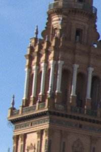
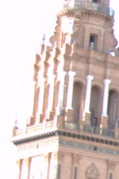

Rango dinámico del Super CCD
Introducción teórica
Super CCD es la denominación que Fujifilm a dado a unos sensores que optimizan la captura de rango dinámico. Para conseguir esto, dichos sensores incorporan dos tipos de captores:
- Captores S
- Captores R
Los captores de tipo S son más grandes que los de tipo R, esta diferencia de tamaño permite que los captores S sean más sensibles a la luz que los R. No obstante, al ser más sensibles a la luz también tienen el inconveniente de saturarse con más facilidad que los captores R.
Cuando realizamos una fotografía con el Super CCD en realidad estamos realizando dos, una tomada con los captores S y otra con los captores R. Debido a la diferencia de sensibilidad a la luz de los dos captores, ambas fotos tendrán diferentes exposiciones.
Teniendo en cuenta que los captores codifican la información en 14 bits, el valor teórico máximo de saturación es de:
Valor Teórico Máximo de Saturación = 214-1 = 16384
En la siguiente gráfica está representada la respuesta de los dos captores. En dicha gráfica el valor 1 representa el valor teórico máximo de saturación.
Como podemos ver en la gráfica anterior, el nivel de saturación de los dos captores es muy diferente. Los captores S responden de forma totalmente lineal hasta llegar a 0.82 (13434), siendo su saturación máxima aproximadamente 0.92 (15073l). En el caso de los captores R, la saturación de estos se produce con un valor mucho más bajo, estos se comportan linealmente hasta llegar a 0.2 (3276), siendo su valor máximo de saturación 0.26 (4259).
Para comparar los dos captores es necesario escalar los valores obtenidos con cada uno de ellos al valor teórico máximo de saturación. De esta forma hemos podido aproximar, una sensibilidad relativa entre los dos captores de:
- Red: 5.07
- Green: 4.51
- Blue: 5.24
Comparativa de reveladores para el Super CCD
En esta sección compararemos la forma en la que diferentes reveladores RAW aprovechan las características del Super CCD, para ello trabajaremos con una imagen RAW obtenida a través de una Fuji S5 Pro, la cual fue sobreexpuesta con el fin de mostrar las capacidades del sensor que incorpora esta máquina.
Para realizar las pruebas de revelado, dejaremos los parámetros tal y como estaban configurados en la camara a la hora de realizar la captura, ya que el objetivo de este artículo es mostrar el rendimiento del sensor no la creatividad de un servidor (menos mal).
Hyper Utility
La imagen mostrada a continuación, ha sido revelada con Hyper Utility v3 (programa oficial de Fuji).

Como podemos ver, a pesar de la gran diferencia de luz en la imagen, el revelador al usar la información del sensor R, es capaz de recuperar en gran medida parte de la información quemada en la imagen proveniente de los captores S.
Ufraw
En este caso, la siguiente imagen es el resultado de revelar el RAW a través de Ufraw.
Aunque la imagen haya sido revelada con Ufraw, la mayoría de los reveladores hubieran dado resultados similares (refiriéndonos a las altas luces), ya que la mayoría de ellos solo hacen uso la información de los captores S.
Dado que no tengo conocimiento de que en GNU/Linux exista ningún revelador que explote al máximo la información que genera el Super CCD, decidí buscar una forma de explotar las características de este sensor en dicho sistema operativo. En el afán de conseguir este objetivo, estudié el comportamiento de Dcraw con los archivos RAW generados por el Super CCD. Como muchos sabéis, este programa es un software libre desarrollado por Dave Coffin, el cual incorpora algunas características muy útiles para revelar imágenes generadas con el Super CCD. Cuando revelamos los RAW generados por el Super CCD, Dcraw no usa las dos imágenes para formar una con rango dinámico ampliado, de hecho ignora completamente la imagen proveniente de los captores R. Por contra Dcraw nos permite revelar de forma independiente las dos imágenes contenidas en el fichero RAW. Las dos imágenes siguientes son las provenientes de los sensores S y R respectivamente.
Como podemos ver, ambas imágenes tienen una gran diferencia de exposición, pero quizás el aspecto que más llame la atención esté en la imagen R, en ella podemos observar como existe más información en las altas luces que la devuelta el revelador HU. Esto fue lo que me llevó a pensar que el resultado de HU era mejorable.
Enfuse
Construir un revelador RAW o adaptar uno ya existente para explotar el funcionamiento del sensor supone un trabajo enorme, así que se me ocurrió aplicar un fantástico programa (también software libre) llamado Enfuse.
Enfuse es una magnífica aplicación que nos permite fusionar imágenes con diferente exposición, ¿qué es lo que genera el Super CCD?, ¡¡¡EXACTO!!!, dos imágenes exactamente iguales con una diferencia de exposición que nos permitirá recuperar las altas luces de la escena. Debido al los principios en los que se basa este programa, se hace ideal para este uso, no obstante el uso de este programa se sale de los objetivos marcados para este artículo, así que sin más os mostraré el resultado obtenido.
Comparativa
Por último adjunto una comparativa de los resultados obtenidos con cada programa. La interpretación de estos resultados queda a juicio de cada uno.
Zonas quemadas
| Imagen captores R | Imagen HU | Imagen Enfuse | Imagen Ufraw | Imagen captores S |
|---|---|---|---|---|
| Imagen captores R | Imagen HU | Imagen Enfuse | Imagen Ufraw | Imagen captores S |
|---|---|---|---|---|
 |
 |
|||
| Imagen captores R | Imagen HU | Imagen Enfuse | Imagen Ufraw | Imagen captores S |
|---|---|---|---|---|
| Imagen captores R | Imagen HU | Imagen Enfuse | Imagen Ufraw | Imagen captores S |
|---|---|---|---|---|
|  |  | |||
Zonas oscuras
| Imagen captores R | Imagen HU | Imagen Enfuse | Imagen Ufraw | Imagen captores S |
|---|---|---|---|---|
| Imagen captores R | Imagen HU | Imagen Enfuse | Imagen Ufraw | Imagen captores S |
|---|---|---|---|---|
 |